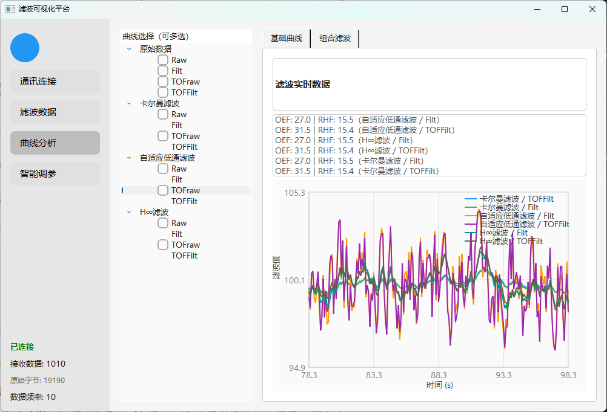
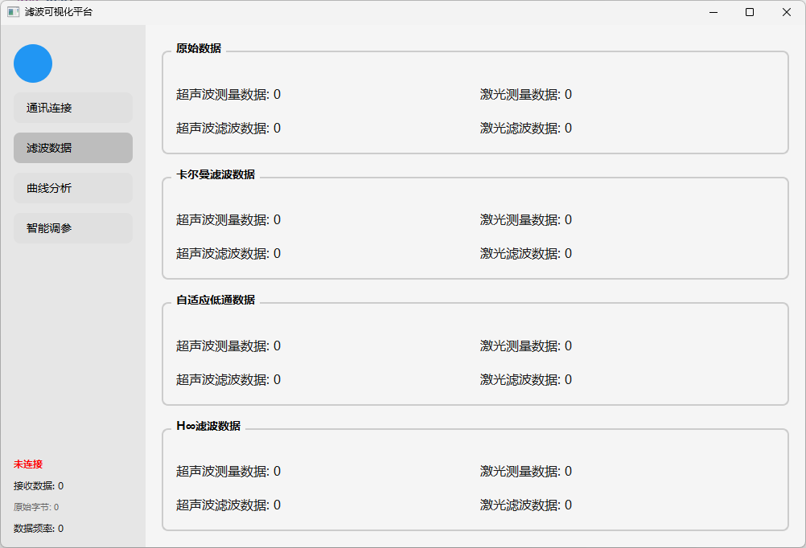
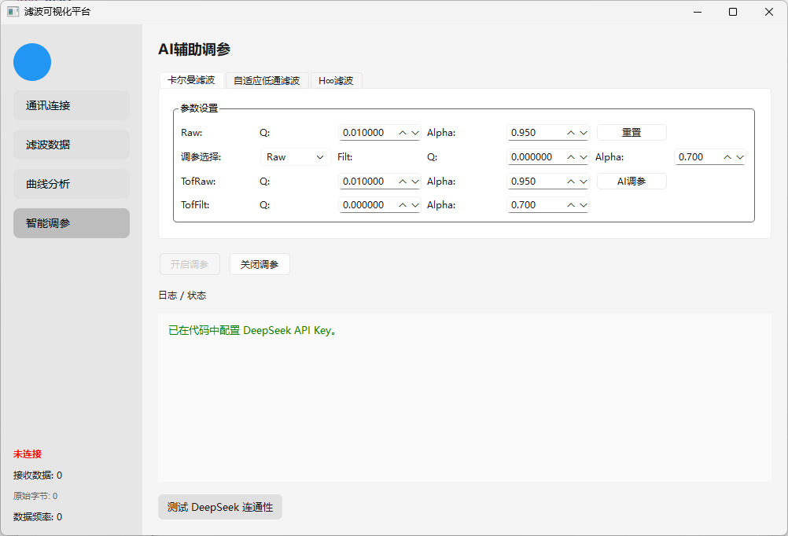
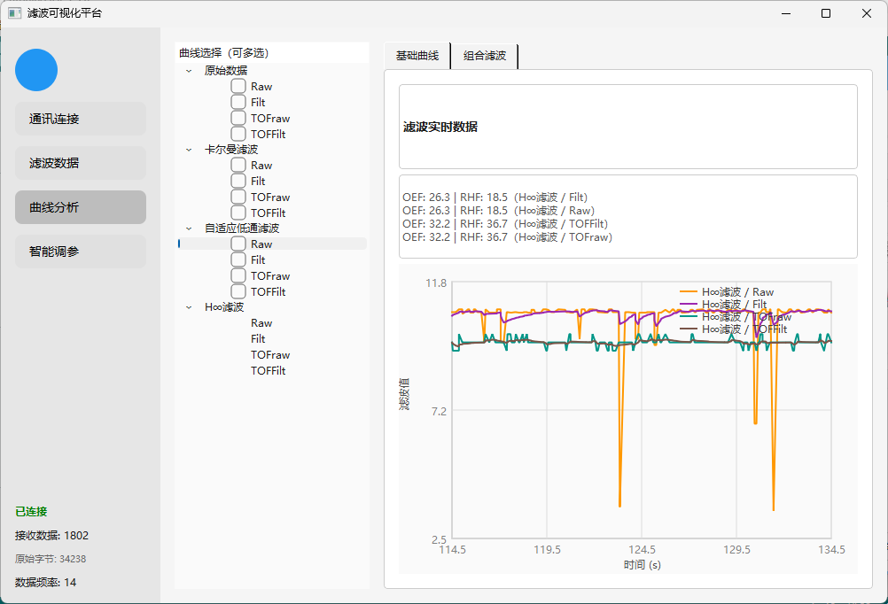
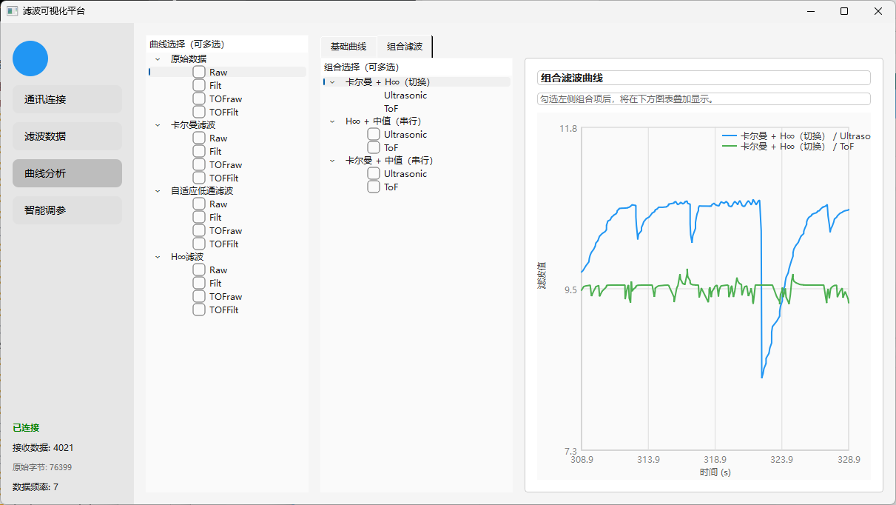
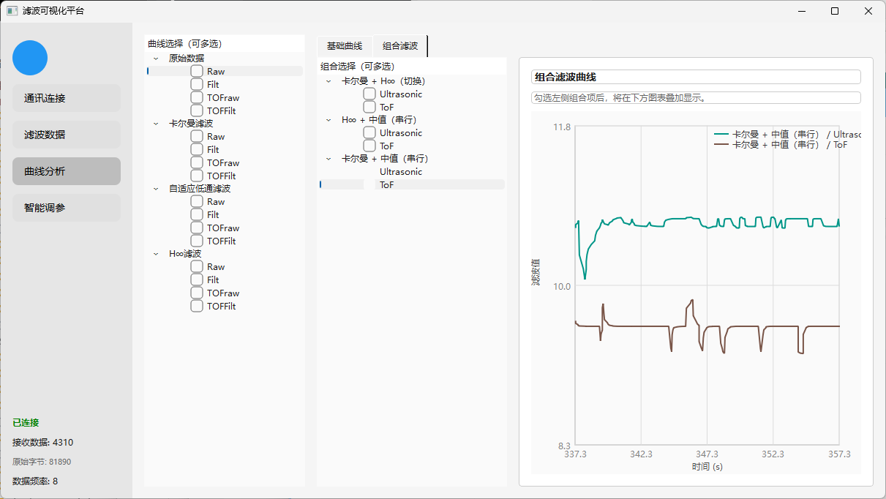
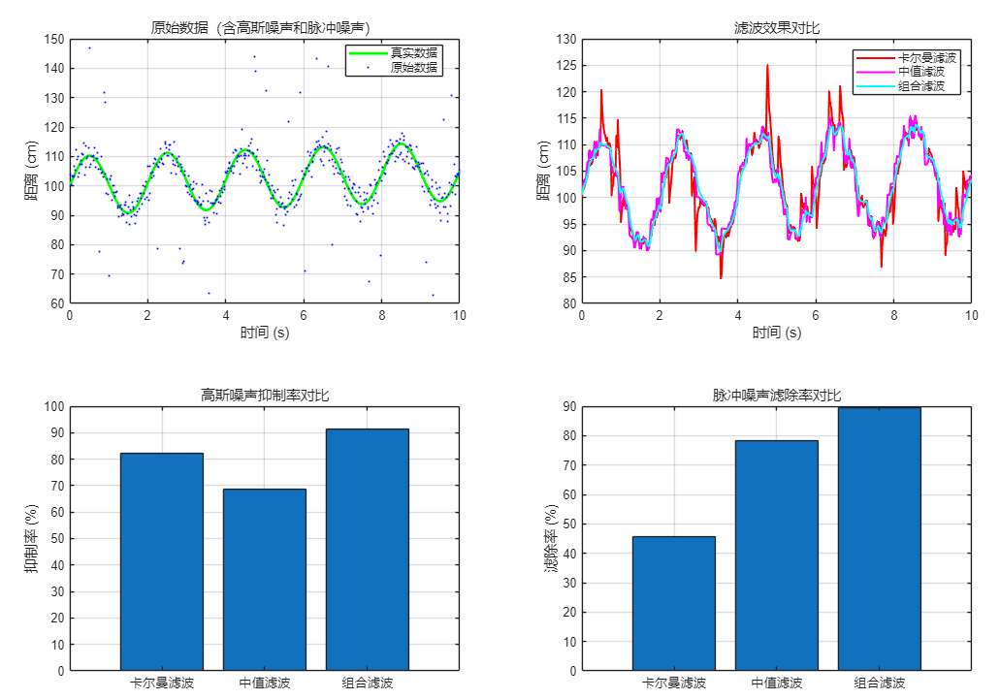
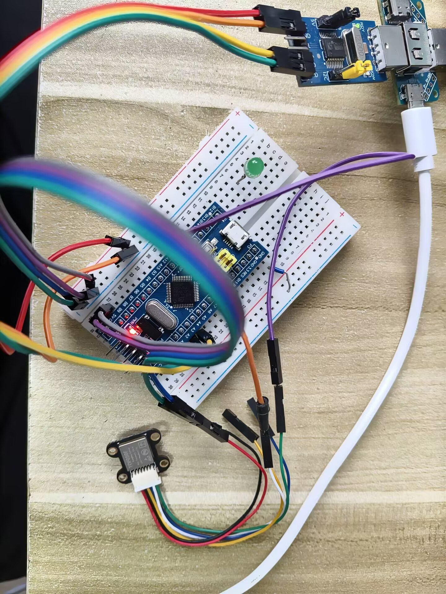

单一传感器，撑不住真实飞行环境
高度数据是飞控系统的核心参数。温度、湿度、机身振动与环境噪声会让测距值剧烈抖动，而超声波与激光各自有明确短板。课题的目标不是再写一个滤波算法，而是搭建一套能把算法「看得见、比得清、调得动」的一体化平台。
- 超声波易受温湿度与波束角度影响，测量值跳变
- 激光测距对表面特性与天气敏感，透明/吸光表面易失效
- 已有研究多聚焦算法优化，缺少采集—处理—展示一体化平台
- 算法效果对比不直观，参数调整过度依赖人工经验
- 超声波 + 激光双源采集，Arduino 下位机完成初步处理
- 自定义串口协议，解决粘包、丢包与误码
- 三种滤波并行运行，原始/滤波波形同屏实时对比
- 引入评分器与 DeepSeek 智能调参，形成自适应闭环
上下位机协同，三层解耦
物理层负责感知，数据链路层负责可靠传输与帧解析，应用层负责计算、可视化与参数整定。层次清晰、功能解耦，保证系统的可维护性与可扩展性。

物理层 · 感知与采集
Arduino Uno R3 驱动 HC-SR04 超声波模块与 TOF050F 激光测距模块，完成高度数据采集和初步滤波，经 USB-TTL / 数传模块上传。
数据链路层 · 帧同步与校验
帧头 0xAA / 帧尾 0x55 定位 + 校验字段，8 KB 环形缓冲区循环扫描，支持粘包重同步；兼容 Arduino 文本行协议；全链路非阻塞异步。
应用层 · 计算与可视化
Qt6 桌面应用四个功能页：通讯连接、滤波数据、曲线分析、智能调参；三路滤波并行计算、实时波形叠加、滑动窗口评分与参数自动回写。
三路并行，按干扰类型选武器
同一数据包同时送入三条独立滤波链路，输出在同一坐标系下叠加对比。高斯噪声、脉冲野值、模型失配三类问题，分别对应三种不同的数学工具。
自适应卡尔曼滤波
测量噪声 R 在线自适应，Q / Alpha 可人工锁定；对高斯噪声平滑效果最好，抑制数据整体抖动。
自适应中值滤波
窗口内识别尖峰脉冲并替换，在滤除野值的同时保留信号边缘，适合传感器偶发跳变。
H∞ 鲁棒滤波
不依赖噪声统计特性，在模型失配与强干扰下保证估计误差有界，不发散。
用数据说话，不是只跑通 Demo
以下结果来自毕业论文第 4 章：50 Hz 固定帧率、115200 波特率下连续 8 小时通信测试，以及 MATLAB 仿真与真实传感器数据的滤波对比实验。
滤波前后关键指标对比
AI 智能调参对照实验
评分器在滑动窗口内对滤波输出打分 → 提取数据特征 → 组装提示词调用 DeepSeek → 解析严格 JSON 参数建议 → 回写 Q / Alpha / 滤波器选择，形成「采集 → 评分 → 调参 → 复评」闭环。


从串口字节到可视结论
上位机全部用 Qt6 纯代码搭建（不使用 .ui 文件），左侧导航 + 右侧堆叠页面。点击任意图片可放大查看。













真实接线，真实数据
从 Arduino Uno R3 到 STM32F103C8T6 两套下位机方案，配合超声波与激光双传感器完成实物验证。所有波形图都来自真实采集数据，而非纯仿真。



想看实现细节？仓库里都有
Qt6 上位机完整工程、C# 工程化迭代版、Arduino / STM32 固件、可编辑 drawio 流程图、论文摘要与技术节选，以及全部实测截图。